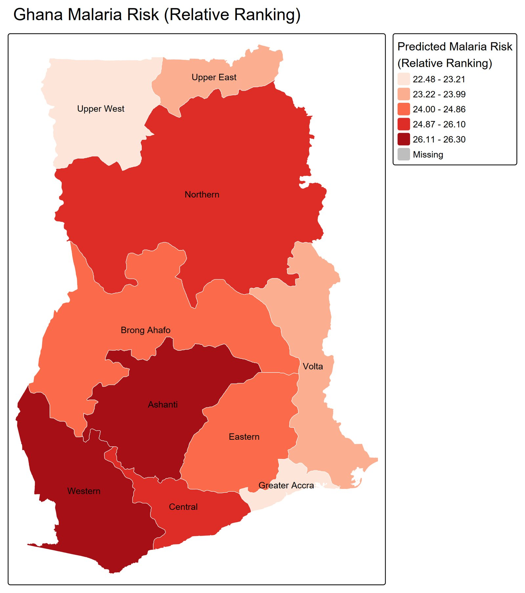
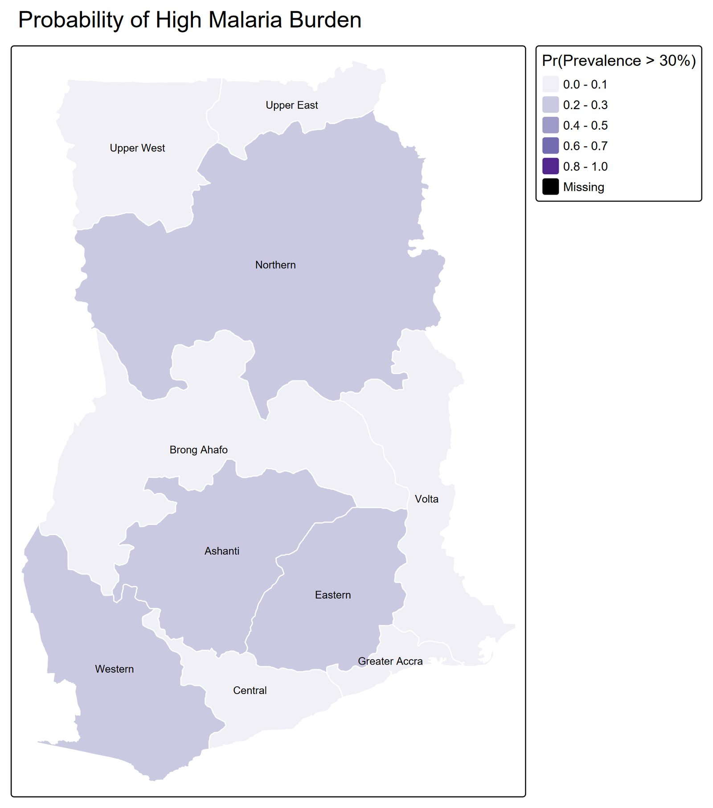
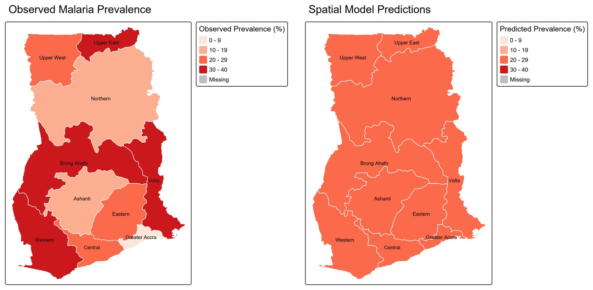
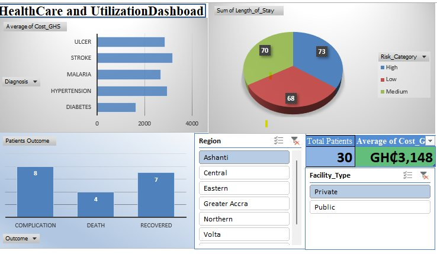

Data scientist · Software engineer · Ghana
Amadu KamalI build statistical models, maps and web tools that make data useful.
Model Analysis Hub is where I do that work: predictive and risk models, geospatial analysis, dashboards and full web platforms. If you have data and a question, I can help you answer it.
Amadu KamalFounder, Model Analysis Hub
What I do
Three kinds of work, one goal: decisions you can defend.
I start from the question you need answered, pick the method that fits, and check the result against reality before handing it over.
Statistical & predictive models
Forecasts and risk models built on sound statistics, then tested against what actually happened so you know how far to trust them.
R · Python · NumPy · SciPy
e.g. model validation for malaria prevalence
Geospatial analysis
Maps that show where a problem is concentrated, so money, staff and supplies go to the places that need them most.
ArcGIS · GeoPandas
e.g. malaria risk across Ghana
Dashboards & web platforms
Dashboards and web apps that put the numbers in front of the people who need them, in a form they will actually use.
JavaScript · React · SQL
e.g. ProjectFlow
Selected work
Mapping malaria risk across Ghana.
A spatial model that combines climate and population data to estimate malaria risk for each region, and how likely each region is to cross a high-burden threshold.

Health teams can't be everywhere at once. The point of this model is to rank Ghana's regions by predicted malaria risk, so bed nets, testing and treatment can be planned around where the burden is likely to be heaviest.
- Type
- Geospatial epidemiology
- Tools
- Python, R, ArcGIS, GeoPandas
- Outputs
- Risk ranking, exceedance probability, validation
- Year
- 2025



Healthcare utilisation dashboard
Cost, length of stay, diagnoses and outcomes by region and facility type, with filters so managers can answer their own questions.
ProjectFlow
A full-stack platform for managing university research projects at Undergraduate, Master's and PhD level, from first draft to final publication.
QuantAI · free tool
Drop in a spreadsheet. Get answers in plain English.
QuantAI is the data tool I built for people who have numbers but not the time to analyse them. It reads your file and tells you what stands out.
- Summary, charts and data-quality checks for every column
- Correlations, regression and predictions, explained in words
- Forecasts that pick up seasonal patterns
- Runs in your browser. Your file never leaves your computer.
About me
I didn't come into tech through a lecture hall. I learned by building things, asking people who knew more than me, and building again.
For the past five years I've taught myself statistics, mapping and software engineering, mostly by working on real problems. Model Analysis Hub is the result: a small studio that takes research-grade methods and turns them into tools people can use.
Contact
Tell me what you're working on.
A short message is enough: what the data is, and what you want to know from it. I usually reply the same day.